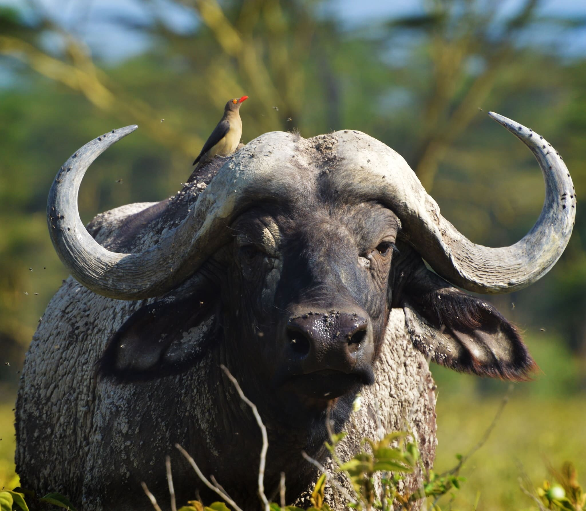

Syncerus caffer
da família BovidaeO búfalo-africano (Syncerus caffer), também conhecido como búfalo-cafre, búfalo-do-cabo, búfalo-negro-africano ou ainda búfalo-da-cafraria, é um mamífero bovino nativo da África. O búfalo-africano, é encontrado normalmente na savana em países por toda a África sub-saariana, embora geralmente confinado em áreas protegidas.
Ambos os sexos têm chifres, apesar do tamanho e formato ser variável.
O búfalo-africano embora fisicamente semelhante ao búfalo comum encontrado na pecuária do norte do Brasil, é um animal de maior porte e selvagem. O búfalo adulto é muito forte, impondo respeito mesmo a um grupo de leões que possa cruzar o seu caminho. Além do homem, possui como predador natural o leão, mas mesmo um indivíduo da manada é capaz de se defender usando a força ou a proteção da própria.
Regularmente pelo número de animais na manada, pela dispersão no terreno e pela falta de defesa de animais idosos, os leões podem matar e comer um búfalo, mas isto exige que um grupo de leões se organize e ataque um único animal.É muito raro um leão conseguir ferir com gravidade ou matar um búfalo adulto atacando-o sozinho.
“O búfalo não é tão perigoso quanto todo mundo o faz parecer. As estatísticas provam que nos Estados Unidos mais americanos morrem em acidentes automobilísticos do que por búfalos.”
- Estado de conservação: Estável
- Ordem: Artiodactyla
- Gênero: Syncerus
- Idade Média: 15 anos
- Macho adulto: 500kg
- Fêmea adulta: 900kg
Nos animais da savana, os chifres são em forma de gancho, curvando-se para baixo a partir de sua origem no crânio antes de enrolar para cima e para dentro.
Atualmente estima-se que sobrevivem 900 000, sendo a maioria na savana da África oriental. Os motivos para a diminuição da população dos búfalos-africanos foram a caça predatória, o uso do seu habitat como campos de agricultura, secas e a introdução no continente africano de pestes e doenças. Atualmente é considerado um animal fora do risco de extinção devido a proteção em parques nacionais e reservas privadas nas regiões da savana africana, entretanto o seu habitat é diminuído em área a cada ano.